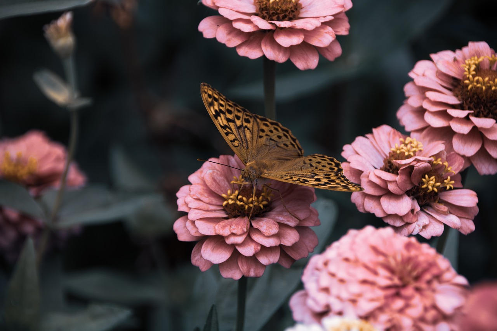

Kupu-kupu di Indonesia memiliki keanekaragaman hayati yang tinggi. Jumlah spesies kupu-kupu di Indonesia yang dapat dikenali sedikitnya sebanyak 2.000 spesies pada tahun 2020 M. Namun, diperkirakan jumlah spesies kupu-kupu di Indonesia mencapai 4.000–5.000 spesies. Kupu-kupu di Indonesia terbagi menjadi 10 famili. Spesies kupu-kupu di Indonesia paling banyak termasuk dalam famili Nymphalidae. Sedangkan famili kupu-kupu dengan spesies paling sedikit adalah famili Rionidae. Penyebaran spesies kupu-kupu terjadi di seluruh wilayah Indonesia. Pola penyebaran kupu-kupu di Indonesia terbagi dua, yaitu yang berasal dari benua Asia dan benua Australia.
Walaupun memiliki sayap yang indah dengan warna yang beraneka ragam, sebenarnya sayap kupu-kupu transparan. Sayap dari kupu-kupu terbentuk dari kumpulan lapisan yang disebut chitin. chitin merupakan sebuah protein yang membentuk kerangka sayap dan lapisan tipis sayap. Ribuan sisik kecil yang berpigmen menyelimuti permukaan transparan dari sayapnya. Sisik inilah yang membentuk pola warna yang berbeda pada sayap kupu-kupu, terlebih saat terkena pantulan cahaya matahari. Semakin tua umur seekor kupu-kupu, maka transparansi dari sayap akan semakin terlihat. Lapisan sisik-sisik halus ini anti basah, sehingga apabila sedang terjadi hujan, serangga ini masih bisa terbang. Inilah salah satu hal yang istimewa dari kupu-kupu dibanding dengan serangga jenis lainnya. Bila hujan turun, serangga lain akan sibuk mencari tempat berteduh, hanya kupu-kupu yang tidak peduli pada hal itu dan tetap terbang di antara bunga.
Selain sayapnya yang indah, kupu-kupu bermanfaat untuk membantu penyerbukan tanaman, karena pada umumnya kupu-kupu sangat menyukai nektar yang terdapat pada bunga. Dengan terbang di antara bunga, kakinya akan bergesekan dan menyebabkan batang bunga bergoyang sehingga menyebabkan serbuk sari (pollen) keluar. Saat pengisapan nektar, serbuk yang ada di benang sari akan menempel pada tungkai kupu-kupu dan akan menempel pada kepala putik bunga berikutnya yang dikunjungi. Saat hinggap di bunga lain dengan jenis yang sama, serbuk itu akan menempel di putik dan terjadilah proses penyerbukan.
Kupu-kupu tidak bisa terbang Pada suhu di bawah 12℃. Kupu-kupu adalah jenis hewan dengan darah yang mudah membeku, selain itu kupu-kupu juga tidak mampu mengatur suhu tubuhnya sendiri. Saat kupu-kupu berada pada udara yang sangat dingin, kemampuan terbang untuk mencari makan atau menghindar dari predatornya akan hilang.
